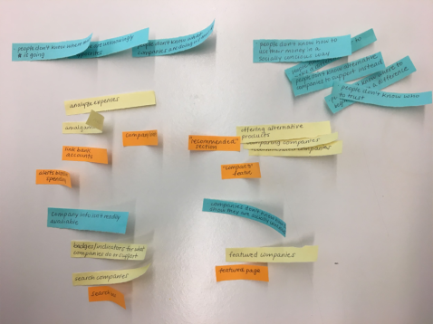
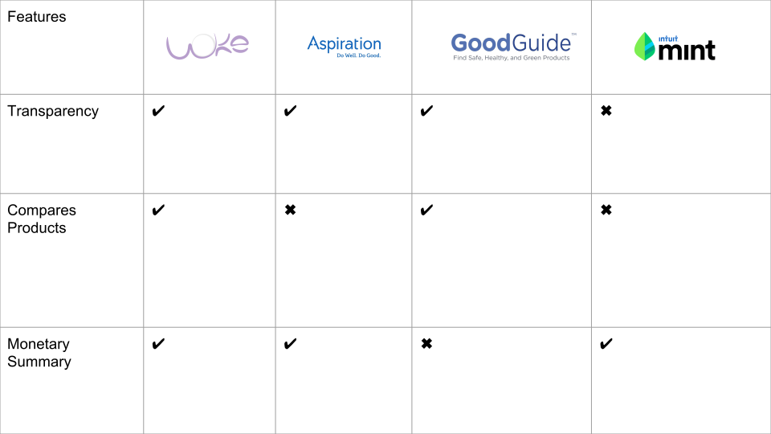
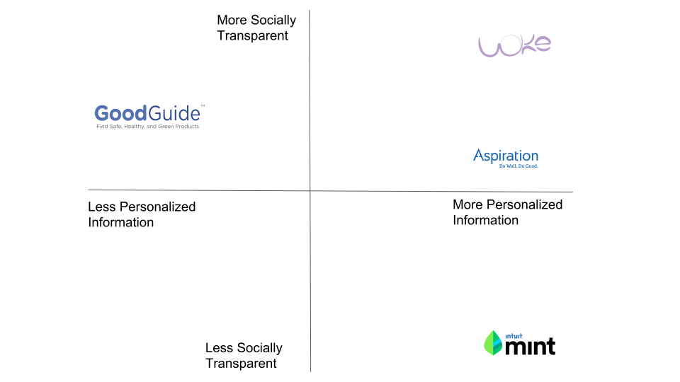
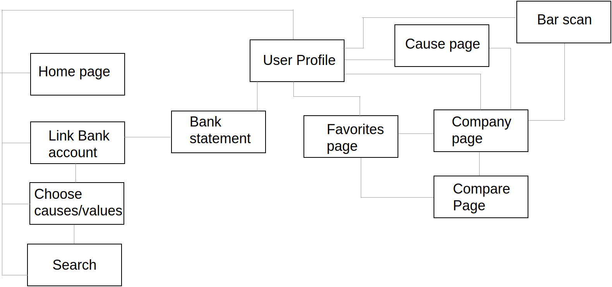
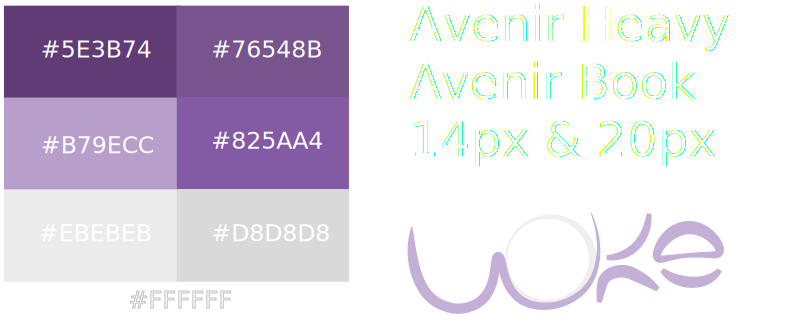

Woke
Problem
In a society where social justice, political correctness, and political alignments means everything, how do we know where our money stands? It's one thing to share online articles about problematic CEO's or business practices, but how do we find alternative options for products that support controversial figures? Can an app also double as a banking app to make better spending decisions for our wallets and our moral conscious as well?Solution
"Woke" is an app that lets the socially conscious or even the traditionally conservative, make better spending habits while supporting companies who align with their beliefs. Linking the users bank with the app, allows users a deeper analysis on where their money goes. Company profiles include transparent insights on publically known causes that they support, lets the user decide whether it matches with their beliefs. The app itself has a neutral stand, only showing matches based on the user’s recent purchases and chosen values "tag" in their personalized profile. Woke app also allows users to use their phone cameras to scan product barcodes and pull up a company's profile for quick decisions making while shopping.Role
Team
Brainstorming

Features
Competitors


Flow Chart

Personas
Karen/ Soccer Mom
Archetype
“I want to speak to the manager”Expertise
Active on Facebook, made an Instagram but doesn’t know how to use it. Has tried every DIY on Pinterest.Expectations
Be in the know and keep her family safe.Must Do
Easy to use.Must Never
Be confusing.References and Influences
Deepak Chopra, family, spouse, friends, faith.Main Goals
Curious user who wants digestible information. Want’s a more “morally correct” lifestyle.
Diane, Social savvy millennial
Archetype
“Check your privilege” “That’s problematic”Expertise
Active on all social media platforms. Posts long stories on Instagram about current social events.Expectations
Social validation, becoming more “woke”.Must Do
Sharing, transparent with information.Must Never
Be biased, include unreliable sources.References and Influences
Beyoncé, Social rights activist on Twitter.Main Goals
Consults app to make all purchases and to tailor.
Metrics
KPI
Styling

Software